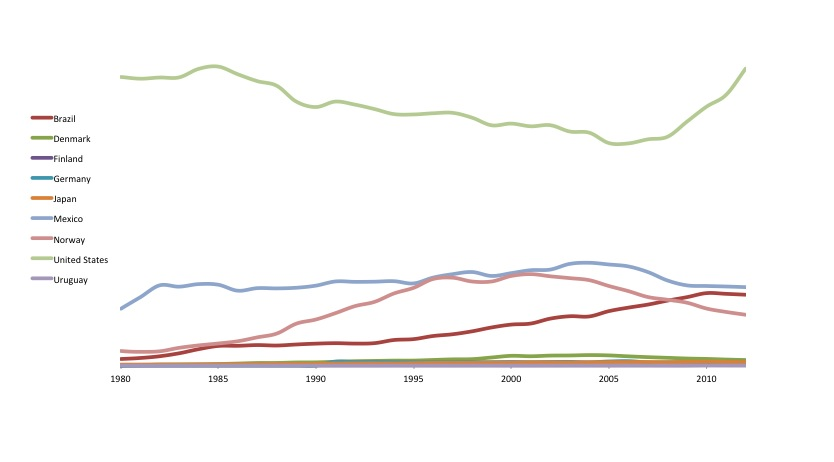

When news came to me that the country was 'reforming' its energy sector, I was excited about the process. I imagined a reform that would shift the country away from a fossil fuel based economy, and transition Mexico into the 21st Century. I imagined a strong focus on developing clean tech funds, policy and financial mechanisms for supporting the growth of renewable energy, and better distribution mechanisms for the massive wealth that oil and gas usually leave behind.
As I came to the last pages of the twenty page document, however, I was amazed its lack of vision. There was very little imagination. Its main strategy was on exploiting shale gas and not renewable energy. Its main focus was on economic growth and not development. There seemed to be little thought going towards integrated resource planning; but the usual promises were there. Shale gas' wealth would eradicate extreme poverty, fight hunger, and improve the quality of our health services. It would also allocate funds to education, and to developing a highly skilled labor force, one that would be able to meet the country's pressing energy challenges.
We've heard this same story with oil before, but how far has it taken us?
In 1979, then President Jose Lopez Portillo (1976 - 1982) announced to the world that Mexico had begun exploiting 'Cantarell', the world's third largest oil field at the time (just behind the Ghawar and Burgan fields of Saudi Arabia and Kuwait). This bounty came with promises of jobs, technological development, commitment to industrialization, and sustainable city-building. Above all, Lopez Portillo (and his team of experts) stressed that this windfall of wealth would be reinvested in Mexico to guarantee a future 'beyond Oil'.
It took 24 years for Cantarell to reach 'peak oil' status. This means that in 2004 Mexico's largest oil field had reached its maximum rate of petroleum extraction, after which it entered a state of terminal decline. Like the graphs below depict, Mexico has experienced a 'net surplus' of oil since the 1980's meaning that it has produced more oil than it consumes, although this has been decreasing over time. The US and Norway 'peaked' in 1970 and 2001 respectively, and Brazil has become a net exporter of oil since 2009. Brazil's success, however, has been led by a stubborn decisiveness to dramatically reduce oil consumption, a strong emphasis on research and development, and a focus on non-fossil fuels alternatives for national consumption. Since 2003 it followed an aggressive ethanol blending policy - and today 80% of the cars in the country run on blended fuel. It's not oil that has put Brazil where it is today, its more about where Brazil has been putting its money - and how.
Things are not so bad, though. If Mexico had saved its oil revenues derived from the net balance of the production and consumption of oil, it could today have amassed a massive wealth of over 300 billion dollars. Its obvious that Mexico didn't save all this money, though. Like Lopez Portillo said, and the current PRI administration promises, oil revenues were spent on education, poverty alleviation, research and development, and Mexico's future 'beyond oil'. Indeed Mexicans had their fair share of the oil through government expenditures on goods and services, cash benefits, and subsidies, but how well did Mexico do?

Lets begin with poverty and inequality. s